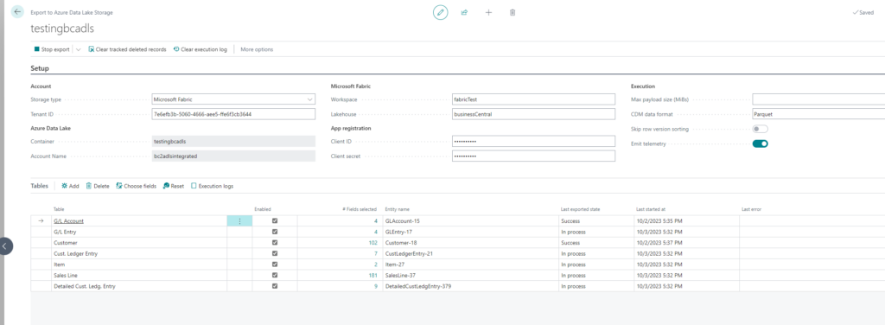
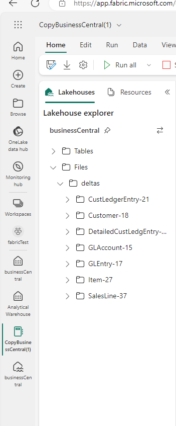
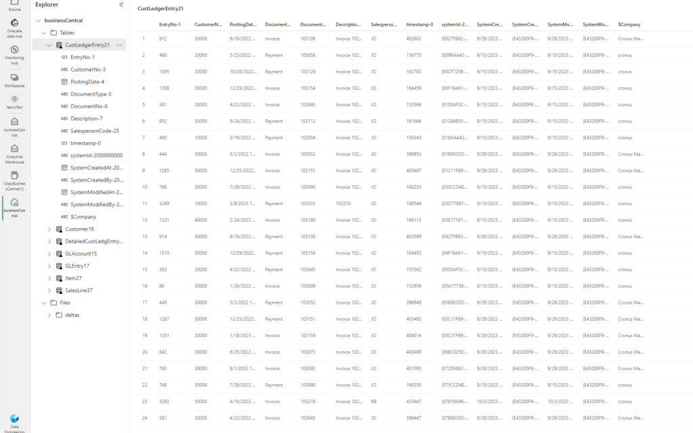
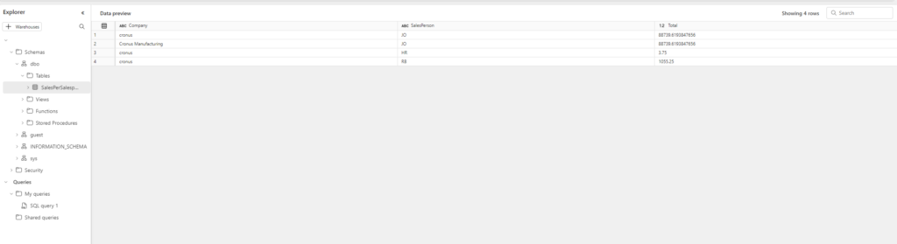

bc2adls is an open-source project from Microsoft that replicates Business Central table data into Azure Data Lake Storage (ADLS) in near real-time. Once the data is in ADLS, Microsoft Fabric can read it directly via a Lakehouse shortcut — no ETL pipeline required. This is a genuinely elegant architecture for cloud-scale reporting and analytics on top of BC data.
Setup overview
On the Business Central side you install the bc2adls extension, configure which tables you want to replicate, and provide the Azure Blob Storage connection details. The extension then pushes incremental changes as Parquet files to your storage account on a schedule you define.

On the Azure side, you create a Fabric Lakehouse and add a shortcut pointing to the ADLS container where bc2adls writes its files. Fabric automatically discovers the Parquet files and presents them as Delta tables — queryable with SQL or Spark.


Querying the data
Once the tables are in Fabric you can query them directly with SQL. Here is an example that aggregates sales amounts per salesperson per company from replicated BC data:
SELECT
Company,
SalespersonCode,
SUM(Amount) AS TotalSalesAmount,
COUNT(*) AS InvoiceCount
FROM
salesinvoiceheader
WHERE
PostingDate >= '2024-01-01'
GROUP BY
Company,
SalespersonCode
ORDER BY
TotalSalesAmount DESC;
Conclusion
bc2adls combined with Microsoft Fabric is a pretty great solution for anyone who needs cloud-scale data warehousing on top of Business Central. The setup is straightforward, the data latency is low, and once the Lakehouse is configured you get the full power of Fabric's SQL analytics, notebooks, and Power BI Direct Lake — all without maintaining a separate ETL infrastructure.